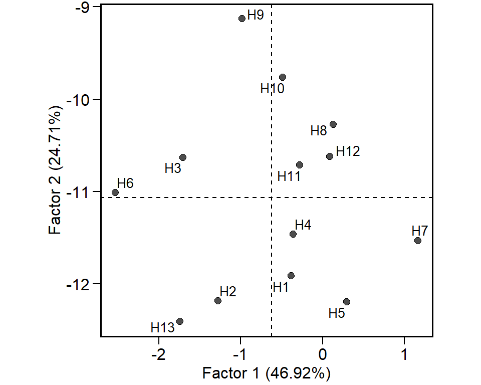

Parametric and non-parametric stability statistics
Source:vignettes/vignettes_stability.Rmd
vignettes_stability.RmdGetting started
In this section, we will use the data in data_ge2. For more information, please, see ?data_ge2. Other data sets can be used provided that the following columns are in the dataset: environment, genotype, block/replicate and response variable(s).
library(metan)
library(cowplot) # used to arrange the graphics
library(kableExtra) # Used to make the tables
dataset = data_ge2
str(dataset)## 'data.frame': 156 obs. of 18 variables:
## $ ENV : Factor w/ 4 levels "A1","A2","A3",..: 1 1 1 1 1 1 1 1 1 1 ...
## $ GEN : Factor w/ 13 levels "H1","H10","H11",..: 1 1 1 2 2 2 3 3 3 4 ...
## $ REP : Factor w/ 3 levels "1","2","3": 1 2 3 1 2 3 1 2 3 1 ...
## $ PH : num 2.61 2.87 2.68 2.83 2.79 ...
## $ EH : num 1.71 1.76 1.58 1.64 1.71 ...
## $ EP : num 0.658 0.628 0.591 0.581 0.616 ...
## $ EL : num 16.1 14.2 16 16.7 14.9 ...
## $ ED : num 52.2 50.3 50.7 54.1 52.7 ...
## $ CL : num 28.1 27.6 28.4 31.7 32 ...
## $ CD : num 16.3 14.5 16.4 17.4 15.5 ...
## $ CW : num 25.1 21.4 24 26.2 20.7 ...
## $ KW : num 217 184 208 194 176 ...
## $ NR : num 15.6 16 17.2 15.6 17.6 16.8 16.8 13.6 15.2 14.8 ...
## $ NKR : num 36.6 31.4 31.8 32.8 28 32.8 34.6 34.4 34.8 31.6 ...
## $ CDED: num 0.538 0.551 0.561 0.586 0.607 ...
## $ PERK: num 89.6 89.5 89.7 87.9 89.7 ...
## $ TKW : num 418 361 367 374 347 ...
## $ NKE : num 521 494 565 519 502 ...Graphic visualization of the interaction
The function ge_plot() may be used to visualize the genotype’s performance across the environments. The black diamond shows the mean of each environment.
p1 = ge_plot(dataset, ENV, GEN, KW)
p2 = ge_plot(dataset, ENV, GEN, KW) + theme_grey() + coord_flip()
plot_grid(p1, p2)
Joint regression analysis
Eberhart and Russell (1966) popularized the regression-based stability analysis. In these procedures, the adaptability and stability analysis is performed by means of adjustments of regression equations where the dependent variable is predicted as a function of an environmental index, according to the following model:
\[
\mathop Y\nolimits_{ij} = {\beta _{0i}} + {\beta _{1i}}{I_j} + {\delta _{ij}} + {\bar \varepsilon _{ij}}
\] where \({\beta _{0i}}\) is the grand mean of the genotype i (i = 1, 2, …, I); \({\beta _{1i}}\) is the linear response (slope) of the genotype i to the environmental index; Ij is the environmental index (j = 1, 2, …, e), where \({I_j} = [(y_{.j}/g)- (y_{..}/ge)]\), \({\delta _{ij}}\) is the deviation from the regression, and \({\bar \varepsilon _{ij}}\) is the experimental error. The model is fitted with the function ge_reg(). The S3 methods plot() and summary() may be used to explore the fitted model.

## Variable KW
## ---------------------------------------------------------------------------
## Joint-regression Analysis of variance
## ---------------------------------------------------------------------------
## Df Sum Sq Mean Sq F value Pr(>F)
## Total 51 127781 2505.5 NA NA
## GEN 12 21350 1779.2 1.061 4.29e-01
## ENV + (GEN x ENV) 39 106431 2729.0 NA NA
## ENV (linear) 1 55465 55465.4 NA NA
## GEN x ENV (linear) 12 7370 614.2 0.366 9.64e-01
## Pooled deviation 26 43595 1676.7 NA NA
## H1 2 311 155.4 0.435 6.48e-01
## H10 2 883 441.6 1.237 2.95e-01
## H11 2 139 69.4 0.194 8.24e-01
## H12 2 2171 1085.3 3.040 5.21e-02
## H13 2 5789 2894.4 8.106 5.35e-04
## H2 2 5740 2870.1 8.038 5.67e-04
## H3 2 3808 1904.1 5.333 6.24e-03
## H4 2 1913 956.7 2.680 7.33e-02
## H5 2 575 287.5 0.805 4.50e-01
## H6 2 5889 2944.3 8.246 4.74e-04
## H7 2 4522 2261.0 6.333 2.54e-03
## H8 2 7462 3730.9 10.449 7.33e-05
## H9 2 4393 2196.7 6.152 2.98e-03
## Pooled error 104 37134 357.1 NA NA
## ---------------------------------------------------------------------------
## Regression parameters
## ---------------------------------------------------------------------------
## GEN Mean bij sdij RMSE R2
## H1 184 0.844 -77.1 5.09 0.907
## H10 164 1.395 18.3 8.58 0.904
## H11 167 0.917 -105.8 3.40 0.963
## H12 157 0.715 232.8 13.45 0.501
## H13 180 0.637 835.9 21.96 0.230
## H2 187 0.639 827.8 21.87 0.233
## H3 169 0.970 505.8 17.81 0.513
## H4 184 1.064 190.0 12.63 0.716
## H5 184 0.606 -33.1 6.92 0.731
## H6 188 1.609 852.5 22.15 0.652
## H7 171 0.658 624.7 19.41 0.290
## H8 160 1.247 1114.7 24.94 0.471
## H9 153 1.699 603.3 19.13 0.737
## ---------------------------------------------------------------------------Genotypic confidence index
Annicchiarico (1992) proposed that a stability method in which the stability parameter is measured by the superiority of the genotype in relation to the average of each environment, according to the following model:
\[ {Z_{ij}} = \frac{{{Y_{ij}}}}{{{{\bar Y}_{.j}}}} \times 100 \] The genotypic confidence index of the genotype i (\(W_i\)) is then estimated as follows:
\[
W_i = Z_{i.}/e - \alpha \times sd(Z_{i.})
\] Where \(\alpha\) is the quantile of the standard normal distribution at a given probability error (\(\alpha \approx 1.64\) at 0.05). The method is implemented using the function Annicchiarico(). The confidence index is estimated considering all environment, favorable environments (positive index) and unfavorable environments (negative index), as follows:
ann5 = Annicchiarico(dataset, ENV, GEN, REP, KW)
ann1 = Annicchiarico(dataset, ENV, GEN, REP, KW, prob = 0.01)
summary(ann5)## Variable KW
## ---------------------------------------------------------------------------
## Environmental index
## ---------------------------------------------------------------------------
## ENV Mean index class
## A1 199 26.50 favorable
## A2 168 -4.50 unfavorable
## A3 147 -26.13 unfavorable
## A4 177 4.13 favorable
## ---------------------------------------------------------------------------
## Analysis for all environments
## ---------------------------------------------------------------------------
## Genotype Mean Mean_rp Sd_rp Wi rank
## H1 184 106.5 4.15 99.7 1
## H10 164 94.2 8.80 79.7 7
## H11 167 96.7 2.21 93.1 3
## H12 157 91.3 9.92 75.0 11
## H13 180 104.6 16.35 77.7 9
## H2 187 108.6 15.64 82.9 5
## H3 169 98.0 11.98 78.3 8
## H4 184 106.5 8.77 92.0 4
## H5 184 106.7 6.72 95.6 2
## H6 188 108.0 16.74 80.5 6
## H7 171 99.3 13.50 77.1 10
## H8 160 92.1 17.29 63.7 12
## H9 153 87.4 15.96 61.2 13
## ---------------------------------------------------------------------------
## Analysis for favorable environments
## ---------------------------------------------------------------------------
## Genotype Mean Mean_rp Sd_rp Wi rank
## H1 195 103.7 2.93 98.9 1
## H10 188 99.8 4.74 92.0 5
## H11 182 97.0 3.69 90.9 6
## H12 175 93.2 3.81 86.9 9
## H13 184 97.2 17.58 68.3 13
## H2 184 97.7 6.38 87.2 8
## H3 174 92.0 10.50 74.7 12
## H4 198 105.5 6.03 95.5 2
## H5 194 103.2 9.34 87.9 7
## H6 200 105.6 15.10 80.7 10
## H7 192 102.9 16.78 75.3 11
## H8 193 102.5 5.92 92.8 4
## H9 188 99.8 3.69 93.7 3
## ---------------------------------------------------------------------------
## Analysis for unfavorable environments
## ---------------------------------------------------------------------------
## Genotype Mean Mean_rp Sd_rp Wi rank
## H1 173 109.3 3.477 103.6 2
## H10 140 88.5 9.058 73.6 8
## H11 152 96.5 0.909 95.0 4
## H12 140 89.5 16.347 62.6 11
## H13 175 112.0 16.491 84.9 5
## H2 190 119.6 14.666 95.4 3
## H3 165 104.0 13.217 82.3 7
## H4 170 107.5 13.803 84.8 6
## H5 174 110.2 0.584 109.2 1
## H6 176 110.5 24.253 70.6 10
## H7 150 95.7 14.602 71.7 9
## H8 127 81.7 20.697 47.7 13
## H9 117 75.1 11.829 55.6 12Superiority index
The function superiority() implements the nonparametric method proposed by Lin and Binns (1988), which considers that a measure of cultivar general superiority for cultivar x location data is defined as the distance mean square between the cultivar’s response and the maximum response averaged over all locations, according to the following model.
\[ P_i = \sum\limits_{j = 1}^n{(y_{ij} - y_{.j})^2/(2n)} \] where n is the number of environments
Similar then the genotypic confidence index, the superiority index is calculated by all environments, favorable, and unfavorable environments.
## Variable KW
## ---------------------------------------------------------------------------
## Superiority index considering all, favorable and unfavorable environments
## ---------------------------------------------------------------------------
## Genotypes Pi_all Or_a Pi_favorable Or_f Pi_unfavorable Or_u
## H1 332 1 276 2 389 3
## H10 1147 10 494 7 1801 10
## H11 918 8 655 10 1181 8
## H12 1566 11 939 12 2194 11
## H13 685 6 749 11 620 6
## H2 337 2 561 8 113 1
## H3 824 7 999 13 649 7
## H4 362 3 245 1 478 4
## H5 387 4 402 5 371 2
## H6 404 5 309 3 499 5
## H7 1105 9 633 9 1577 9
## H8 1789 12 370 4 3207 12
## H9 2073 13 434 6 3711 13
## ---------------------------------------------------------------------------Environmental stratification
A method that combines stability analysis and environmental stratification using factor analysis was proposed by Murakami and Cruz (2004). This method is implemented with the function ge_factanal(), as follows:

## Variable KW
## ------------------------------------------------------------------------------------
## Correlation matrix among environments
## ------------------------------------------------------------------------------------
## A1 A2 A3 A4
## A1 1.0000 0.4846 0.1126 -0.4588
## A2 0.4846 1.0000 0.2937 -0.2033
## A3 0.1126 0.2937 1.0000 -0.1121
## A4 -0.4588 -0.2033 -0.1121 1.0000
## ------------------------------------------------------------------------------------
## Eigenvalues and explained variance
## ------------------------------------------------------------------------------------
## PCA Eigenvalues Variance Cumul_var
## PC1 1.8766 46.92 46.92
## PC2 0.9882 24.71 71.62
## PC3 0.7315 18.29 89.91
## PC4 0.4037 10.09 100.00
## ------------------------------------------------------------------------------------
## Initial loadings
## ------------------------------------------------------------------------------------
## Env PC1 PC2
## A1 -0.8204 0.2949
## A2 -0.7552 -0.2553
## A3 -0.4429 -0.7923
## A4 0.6612 -0.4565
## ------------------------------------------------------------------------------------
## Loadings after varimax rotation and commonalities
## ------------------------------------------------------------------------------------
## Env FA1 FA2 Communality Uniquenesses
## A1 -0.85080 -0.1901 0.7600 0.2400
## A2 -0.50119 -0.6200 0.6356 0.3644
## A3 0.05004 -0.9063 0.8238 0.1762
## A4 0.80279 -0.0316 0.6455 0.3545
## ------------------------------------------------------------------------------------
## Environmental stratification based on factor analysis
## ------------------------------------------------------------------------------------
## Env Factor Mean Min Max CV
## A1 FA1 199.4 180.5 231.9 7.073
## A4 FA1 177.1 149.7 203.2 9.428
## A2 FA2 168.4 112.3 218.9 21.046
## A3 FA2 146.8 120.6 181.6 11.284
## ------------------------------------------------------------------------------------
## Mean = mean; Min = minimum; Max = maximum; CV = coefficient of variation (%)
## The summary statistics are based on the men values of 3 replicates
## ------------------------------------------------------------------------------------References
Annicchiarico, P. 1992. “Cultivar adaptation and recommendation from alfalfa trials in Northern Italy.” Journal of Genetics and Breeding 46: 269–78.
Eberhart, S. A., and W. A. Russell. 1966. “Stability parameters for comparing Varieties.” Crop Science 6 (1): 36–40. https://doi.org/10.2135/cropsci1966.0011183X000600010011x.
Lin, C. S., and M. R. Binns. 1988. “A superiority measure of cultivar performance for cultivar x location data.” Canadian Journal of Plant Science 68 (1): 193–98. https://doi.org/10.4141/cjps88-018.
Murakami, D.M., and C.D. Cruz. 2004. “Proposal of methodologies for environment stratification and analysis of genotype adaptability.” Crop Breeding and Applied Biotechnology 4 (1): 7–11. http://www.sbmp.org.br/cbab/siscbab/uploads/c8128f42-aefe-cdf5.pdf.